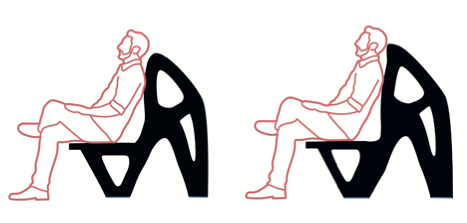

Towards intentional aesthetics within topology optimization by applying the principle of unity-in-variety
Structural and Multidisciplinary Optimization, 2022
| Shannon Loos | Sytze van der Wolk | Nina de Graaf | Paul Hekkert | Jun Wu |
| TU Delft | TU Delft | TU Delft | TU Delft | TU Delft |

Which chair do you find more beautiful?
Abstract
Topology optimization is increasingly applied to design consumer products, for which aesthetics plays an important role to consumer acceptance. In industrial design, it is known that preferences or taste judgement obey certain rules or principles. These principles are not directly quantifiable, but can qualitatively predict and explain aesthetic responses. In this paper, we empirically evaluate whether or not these design principles are effective for increasing the appealingness of topology optimized shapes. Our starting point is an overarching principle known as Unity-in-Variety. Variety stimulates our interests, while unity helps us make sense of a design in its entirety. According to this principle, aesthetic appreciation is maximized when a balance in unity and variety is attained. Since designs from topology optimization often exhibit remarkable complexity and variety, we hypothesize that increasing unity is the key to reach a balance and thus to elevate aesthetic appreciation in topology optimization. In our experimental setup, designs from topology optimization were manually post-processed, with the intention to increase unity, by following the ``principles of perceptual grouping'', known as Gestalt principles. Our user study shows that in 11 out of the 12 pairs of topology optimized designs and their modified counterparts, the modified designs are perceived by the majority as visually more appealing, confirming our hypothesis. These findings provide a good basis for improving the aesthetic pleasure of topology optimized designs, either manually or ultimately by integrating them in the topology optimization formulation. It is expected that this eventually will contribute to a wider acceptance of topology optimization for consumer product design.Keywords
Topology optimization; design aesthetics; unity-in-variety; Gestalt principlesDownload
 |
Paper 2.1 MB |
Bibtex
@article{Loos2022SMO,
title={Towards intentional aesthetics within topology optimization by applying the principle of unity-in-variety},
author={Shannon Loos and Sytze van der Wolk and Nina de Graaf and Paul Hekkert and Jun Wu},
journal={Structural and Multidisciplinary Optimization},
volume={},
number={},
pages={},
year={2022},
doi={},
publisher={Springer}
}